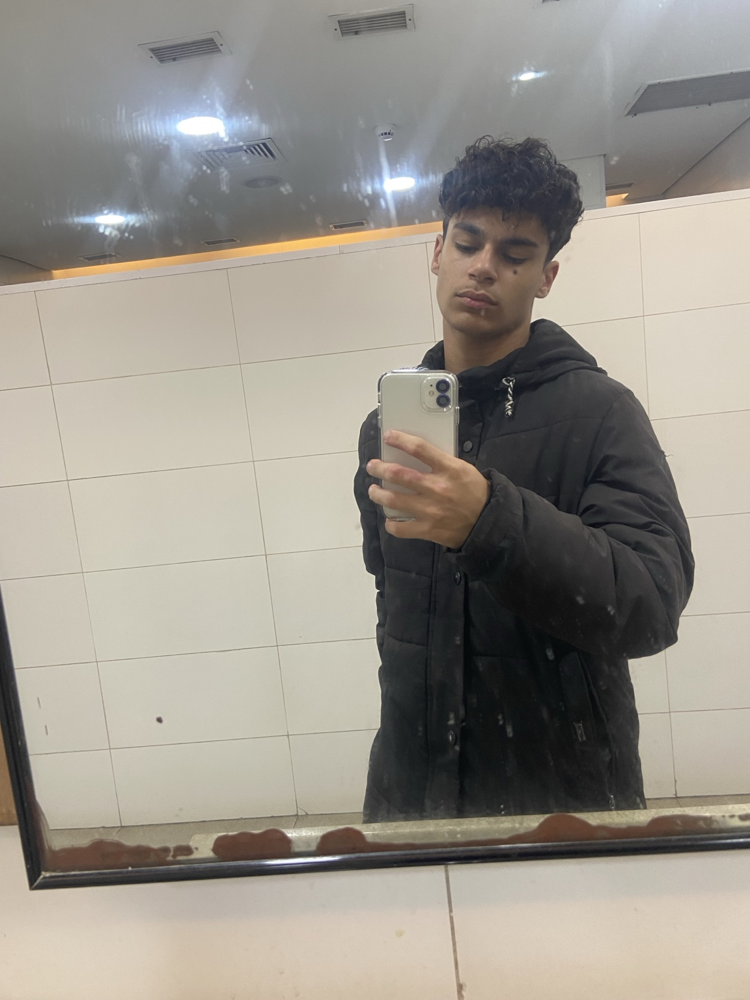
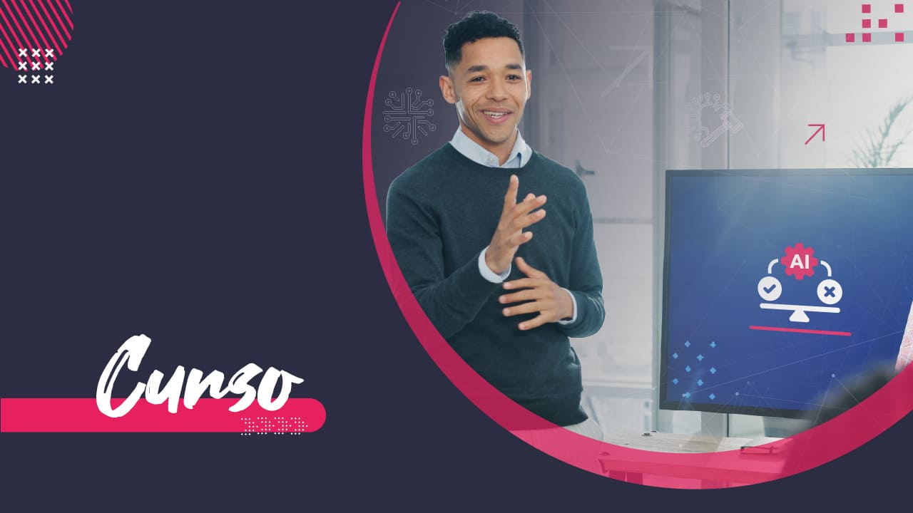
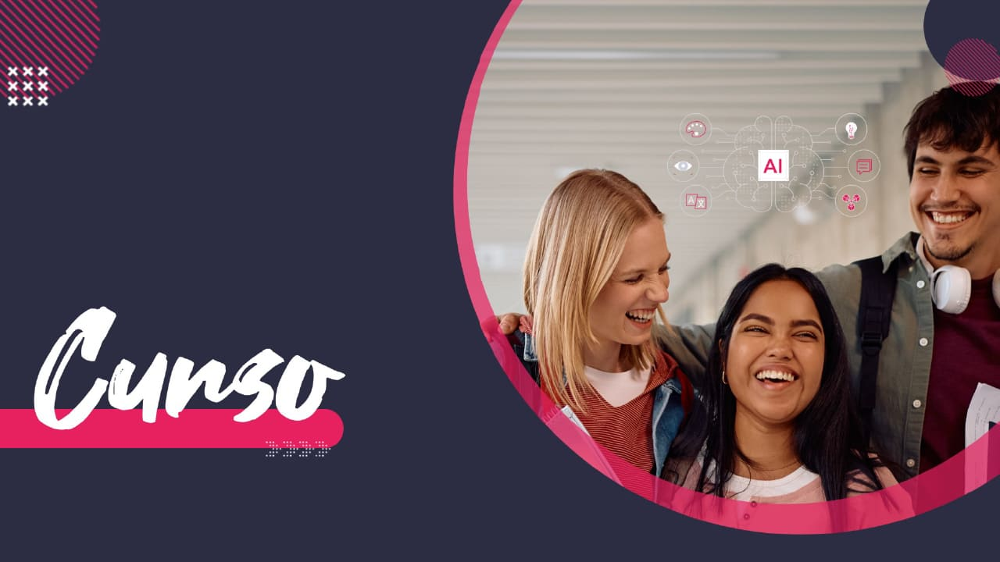

PORTFÓLIO PESSOAL
Sou estudante do 1º DS AMS e estou sempre buscando aprender mais e aprimorar minhas habilidades na área de tecnologia e computadores.

Meu nome é Gabriel Moreira Lima, sou estudante do curso de Desenvolvimento de Sistemas 1 DS AMS na ETEC Pedro Ferreira Alves, em Mogi Mirim. Tenho interesse na área de tecnologia e estou sempre buscando aprender coisas novas e aprimorar minhas habilidades em informática e programação. Meu objetivo é adquirir conhecimentos, desenvolver minhas capacidades e me preparar para futuras oportunidades profissionais.
Alguns dos cursos que estou realizando para aprimorar meus conhecimentos na área de tecnologia.

O curso Ética na Era da IA introduz reflexões sobre o que é ética e como seus princípios se relacionam com o uso da inteligência artificial.
O Curso tinha como Objetivo Ensinar os Fundamentos da Area do TI

O Objetivo do Curso era Aprender a usar a Inteligência Artificial em tarefas e processos, aproveitando seu potencial sem substituir a criatividade e o pensamento crítico humano.
Eventos e palestras dos quais participei durante minha formação.
Tema: Apresentação da empresa
Responsável: Empresa BeeCloud
Palestrante: Diego
Participei de uma apresentação sobre a empresa, conhecendo melhor sua atuação e suas soluções tecnológicas.
Tema: Startup Day
Responsável: Sebrae Startups
Participantes: Criadores de startups, responsáveis pelo evento e representantes da prefeitura.
Evento voltado ao universo das startups e ao compartilhamento de experiências empreendedoras.
Tema: O Mercado de Trabalho
Responsável: Empresa Infonacci
Palestrante: Renan
A palestra abordou oportunidades profissionais, habilidades valorizadas pelas empresas e preparação para o mercado de trabalho.
Tema: Quando a “brincadeira” vira crime
Responsável: Coordenação da ETEC junto a Elaine Navarro
Palestrante: Elaine Navarro
A atividade tratou de privacidade, consentimento e responsabilidade no ambiente digital.
Responsável: FATEC Arthur de Azevedo
Participei do evento Fatec Portas Abertas, uma oportunidade de conhecer melhor a instituição e seu ambiente de formação.
Tema: Primeiros Socorros
Responsável: Coordenação da ETEC junto ao Corpo de Bombeiros de Mogi Mirim
Palestrantes: Bombeiros de Mogi Mirim
A atividade apresentou orientações introdutórias sobre como agir em situações de emergência.
Tema: “Compartilhar conhecimento é a melhor forma de evoluirmos juntos.”
Responsável: Coordenação da ETEC junto ao palestrante
Palestrante: Mauro Roberto Pedreira Gonçalves
A palestra destacou a evolução constante da tecnologia e a importância de compartilhar conhecimentos.
Tema: Construa Seu Futuro na TI
Responsável: Coordenação da ETEC junto a Mauro Romão
Palestrante: Elton Zaniboni
A palestra abordou caminhos e possibilidades para construir uma carreira na área de Tecnologia da Informação.
Palestrante: Victor Hugo
Participei de uma palestra sobre o papel da tecnologia e dos sistemas que sustentam o mundo digital.
Certificados de cursos e atividades que contribuíram para minha aprendizagem.
Certificado de conclusão de curso autoinstrucional da Escola Virtual.
Visualizar certificadoCertificado de conclusão de curso autoinstrucional da Escola Virtual.
Visualizar certificadoCertificado de conclusão de curso autoinstrucional da Escola Virtual.
Visualizar certificadoEntre em contato comigo através dos botões abaixo.